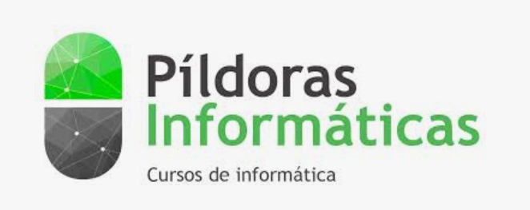

HTML desde cero (YouTube)
Curso introductorio para aprender HTML desde cero: estructura básica, etiquetas, semántica y buenas prácticas para crear páginas web correctamente.
Ver curso en YouTubeEsta página recopila cursos gratuitos y de calidad para repasar JavaScript, aprender o afianzar React, dominar Git y GitHub y formarte en WordPress.
Usa esto como manual de repaso: elige un recurso, toma apuntes y aplica lo aprendido en un mini-ejercicio. Lo ideal es combinar 2–3 cursos y repetir conceptos.
Curso introductorio para aprender HTML desde cero: estructura básica, etiquetas, semántica y buenas prácticas para crear páginas web correctamente.
Ver curso en YouTube
Curso para aprender CSS desde cero: colores, tipografías, cajas, layout y primeros pasos para dar estilo a tus páginas web.
Ver curso en YouTube
Web de referencia para aprender y consultar CSS de forma clara y estructurada. Ideal como documentación, repaso rápido y profundización en propiedades, layouts y buenas prácticas.
Visitar web
Web de referencia para aprender HTML de forma clara y estructurada. Ideal como documentación, consulta rápida y repaso de conceptos.
Visitar web
Curso completo de HTML5 explicado paso a paso. Muy recomendable para entender semántica, formularios y estructura profesional de documentos HTML.
Ver cursoCurso orientado a profundizar en CSS: layouts avanzados, posicionamiento, responsive design y buenas prácticas profesionales.
Ver cursoEn esta sección se recogen los manuales creados y trabajados en clase con el alumnado. Son materiales didácticos propios, estructurados paso a paso y alineados con los contenidos del curso.
Manual completo de HTML. Incluye estructura básica, etiquetas semánticas, formularios, tablas, buenas prácticas y ejemplos claros para aprender desde cero.
Ver manualManual práctico centrado en estilos CSS, uso de Bootstrap y animaciones. Diseñado para aprender maquetación moderna, responsive design y mejora visual de sitios web.
Ver manualCurso completo para repasar los fundamentos de JavaScript paso a paso.
Ver curso
Introducción a JavaScript desde cero: sintaxis, variables, funciones y conceptos básicos para empezar con programación web.
Ver curso en YouTube
Curso ideal para reforzar fundamentos clave antes de React: variables, funciones, arrays, objetos y lógica básica.
Ver curso
Curso orientado a personas que empiezan desde cero en programación. Ideal para comprender lógica básica, variables, estructuras de control y sentar una buena base antes de profundizar en JavaScript moderno.
Ver curso
Curso enfocado a reforzar JavaScript antes de empezar con React.
Ver cursoAquí tienes los manuales y recursos propios trabajados con el alumnado para afianzar JavaScript. Incluyen teoría clara, ejemplos guiados y propuestas de ejercicios para practicar.
Manual estructurado para aprender JavaScript desde la base: variables, condicionales, bucles, funciones, arrays, objetos y práctica enfocada a desarrollo web.
Ver manualReglas y ejemplos para escribir código limpio: nombres de variables, funciones, archivos, carpetas y convenciones que ayudan a mantener proyectos ordenados y profesionales.
Ver guíaColección de ejercicios prácticos desarrollados con HTML, CSS y JavaScript, que consumen la API pública de Giphy. Ideales para practicar peticiones fetch, manejo del DOM, eventos, lógica y estructura de una mini-aplicación real.
Ver ejercicios Ver repositorio GitCurso de React explicado desde cero con ejemplos claros.
Ver curso
Curso gratuito para empezar en React paso a paso.
Ver curso
Playlist de React desde cero con explicación clara y práctica con ejemplos.
Ver curso en YouTube
Curso completo en formato playlist: componentes, JSX, props, estado, hooks y estructura de aplicaciones React.
Ver curso en YouTubeManuales y ejercicios prácticos de React trabajados con el alumnado. Incluyen conceptos fundamentales, práctica guiada y proyectos enfocados a aprender React de forma progresiva.
Manual propio para aprender React desde cero: componentes, JSX, props, estado, hooks básicos y estructura de aplicaciones React, con ejemplos claros y enfoque didáctico.
Ver manualEjercicio práctico centrado en maquetación y diseño usando Tailwind CSS. Ideal para trabajar layout, estructura visual y organización de componentes en React.
Ver ejercicioRepositorio Git del proyecto trabajado en clase. Útil para repasar estructura de proyecto React, commits, historial y trabajo con GitHub.
Ver repositorioCurso esencial para aprender control de versiones y trabajo colaborativo.
Ver curso
Playlist completa para aprender Git desde cero y dominar GitHub: ramas, commits, push/pull y trabajo colaborativo.
Ver curso en YouTubeRepositorio creado como ejercicio práctico para aprender Git y GitHub en equipo. Incluye trabajo con ramas, commits, merges, resolución de conflictos y flujo de trabajo colaborativo, simulando un entorno real de desarrollo.
Ver repositorio en GitHub
Playlist de YouTube con tutoriales paso a paso para aprender WordPress desde cero: instalación, contenidos, temas y más.
Ver curso en YouTube
Curso completo en formato playlist: instalación, panel de administración, páginas, entradas y gestión básica del sitio.
Ver curso en YouTube
Curso con enfoque práctico y actualizado, ideal para aprender desde cero la creación y gestión de sitios con WordPress.
Ver curso en YouTube
Curso completo de Node.js en español, actualizado para 2024. Incluye fundamentos, npm, módulos y proyectos prácticos.
Ver curso
Tutorial completo de Express.js para crear APIs REST. Incluye rutas, middleware, autenticación y bases de datos.
Ver curso
Curso actualizado de desarrollo backend con Node.js y Express. Proyectos reales, buenas prácticas y deployment.
Ver cursoAprende a crear APIs REST completas con Node.js, Express y MongoDB. Proyecto paso a paso con autenticación JWT.
Ver cursoCurso completo y actualizado de Node.js con proyectos modernos. Incluye ES modules, async/await y las últimas características.
Ver cursoManual completo para aprender SQL desde cero: creación de bases de datos, tablas, relaciones, claves primarias, consultas SELECT, filtros, joins y operaciones CRUD.
Ver manual SQLManual práctico para aprender MongoDB: bases de datos NoSQL, colecciones, documentos, consultas básicas y estructura de proyectos con Mongo.
Ver manual MongoDBEjercicio práctico con base de datos MongoDB donde se trabaja el CRUD completo, estructura de datos y conexión con backend.
Ver repositorioGuía práctica para aprender a desplegar proyectos web: frontend, backend, configuración básica y publicación online.
Ver manual de despliegueManual para aprender backend con Node.js y Express: creación de servidores, rutas, APIs REST y estructura de proyectos.
Ver manual Node & ExpressRepositorio práctico donde se trabaja un CRUD completo utilizando ficheros JSON como base de datos. Ideal para entender la lógica antes de pasar a bases de datos reales.
Ver repositorioEjercicio práctico basado en datos JSON para trabajar estructura, lectura, escritura y lógica de aplicación en frontend.
Ver repositorioProyecto completo de aplicación web con: base de datos SQL, backend, frontend en HTML y frontend en React. Ejemplo real de arquitectura full stack.
Ver repositorio
Canal educativo de referencia con cursos completos de programación, desarrollo web, JavaScript, React, backend y más.
Ver canal
Canal con playlists y cursos prácticos sobre React y desarrollo web moderno. Ideal para seguir aprendiendo con contenido actual.
Ver contenido
Plataforma y comunidad de Brais Moure con cursos gratuitos para aprender JavaScript, Git, Bash, Python, SQL y más.
Ver cursosPlataforma y comunidad de Miguel Ángel Durán con cursos gratuitos para aprender JavaScript, Git, React, Node.js y más.
Ver cursosLos enlaces de esta página no están elegidos al azar. Corresponden a creadores y formadores que, en mi experiencia, explican la programación de forma clara, honesta y orientada a la práctica real.
Canales y plataformas como MoureDev, Kiko Palomares, Píldoras Informáticas, TodoCode o Midudev, entre otros, destacan por:
Aqui te he recopilado la mayoría de mis canales y cursos favoritos para repasar JavaScript, React, Git y WordPress. ¡Espero que te sean útiles! Y recuerda a programar sólo se aprende programando.
👉 Aprender a programar no va de memorizar, sino de entender, practicar y repetir.